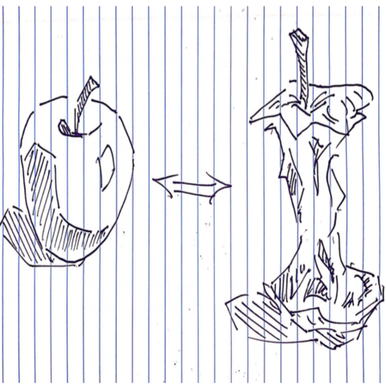

By Bruce Changlong Xu
在表面上，经济学的主要目标就是研究高效的办法去分配世界上的资源，甚至 怎样利用心理学去了解人类不同经济决策的原因。我们高中的经济学老师在第一课堂中如下介绍经济学：“怎样在社会中把本身有限定的资源分布给大家，从而满足人类 本身无限的要求”。我觉得这样介绍经融学比较重视缺乏的心目，而我们更应该提倡 一种丰满的心态。
Economics is the study of the optimal allocation of resources, and more importantly a way to more precisely measure human behaviour and psychology through a monetary lens. I was once told that it was the study of how to satisfy “The infinite needs and wants in a world with a finite number of resources”. Indeed, if this is the case, the epistemic limitations of the field are directly dictated by the unquantifiability of human desire.
其实了解社会，了解经济系统应该从根源开始 --- 人类的日常习惯和价值观。当 今的经济跟二十年前的经济截然不同，科技发展，文化移民，年轻人流行的习惯会让 社会模式快速变化。我觉的在一种不断变化，人口增加的社会中我们应该多花精力去 想办法怎样能够创造更新的机会、跟多资源、更多工作，没必要在 “Optimal Allocation” 的问题上想太多，所谓 : Focus on expanding the PPC curve rather than shifting needlessly back and forth on the boundary。虽然战争的原因多种多样，比如外生的原因 （技术变革、领地冲突、经济危机），和内生的原因（价值观的改变，管治改变等 等），大部分的冲突是因为我们的思想不够宽阔。
This is certainly a good introduction to the subject, but the heart of economics should not be about tap-dancing around the fixed notion of what humans want or need, it should be about how to appropriately adjust our everyday habits in order to appropriately cater to the optimal functioning of society. It should not be the study of who gets what resources under what conditions, but about how to create abundance for every single individual or entity in our world. Conflicts and wars are initiated primarily due to exogenous factors such as economic fragility, technological changes, pandemics and territorial dispute [Jackson] but can also be influenced by endogenous factors such as changes in governance, core values such as in the tragic case of WWII. Modern day corporate wars are an example of this, as multinational conglomerates tangle themselves in legal disputes, competing ferociously to capture a larger portion of the market.
很多公司老板会同意，那些能够创新、创造机会的同伴实在是无价的。这种人 无论在多困难的情况下会繁荣，而也会把其他人领来，带出其他人最好的特性和优 势。我们的公司目标就是能够培养出这样心态丰富的学生，不拘一格世界居民，以及 通过技术去帮助大家满足自己的潜力。
Human nature is fundamentally protectionist and rightly so in most cases - if the idea of individualism and ownership vanish then our society would be a complete mess. It’s crucial to take personal pride in the work that you do and the professional milestones that you achieve; Everyone should celebrate these achievements together. Everyone is their own person with their own journey and their own definition of success. Christopher, one of our company’s Technological Maestros has quite aptly pointed out Adam Smith’s perspective [Smith 1] on free markets: “It is not from the benevolence of the butcher, the brewer or the baker that we expect our dinner, but from regard to their own self-interest”. What’s lesser appreciated however, are Adam Smith’s views [Smith 2] on self-love and benevolence: “A merchant’s benevolence provides a few of our needs at particular times but not all of our needs and wants all of the time”. When carefully read, these two claims are not contradictory but complementary.
Zooming into a more personal emphasis: It’s easy to fly the flag high when things are going smooth, in times of abundance, but the ultimate judge of character happens during the times of adversity and scarcity. During these times the best of us step up instead of step down, the best of us creates this abundance and lifts the people around them up rather than be embroiled in conflict. Everyone will meet numerous periods of adversity throughout their lives, but that’s exactly what friends and family are for - to help you through those times and to bring out the best in you.
World wars, civil wars and trade wars are not a sign of strength and a chance to flex military or resource prowess, the very fact that militaries exist is in my opinion an open admittance to human weakness and fear: That we do not have enough confidence in each other, as human beings, to be synergistic parts of society at large. It is our hope that Presque Partout Sino will be a shining symbol of this abundance, embodying the right way to do economics.